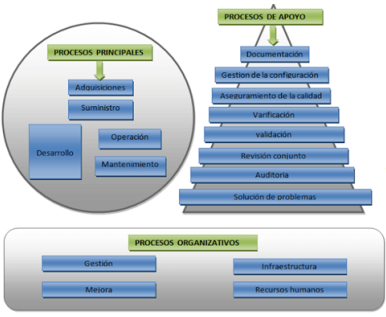
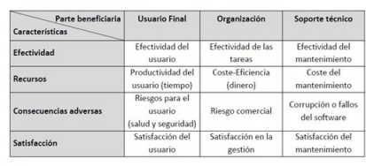

ISO 12207 - Modelos de cilos de vida del software
Estándar para los procesos de ciclo de vida del software de la organización, Este estándar se concibió para aquellos interesados
en adquisición de software, así como desarrolladores y proveedores. El estándar indica una serie de procesos desde la
recopilación de requisitos hasta la culminación del software.
- Principales
- De apoyo
- De organización
Este estándar agrupa las actividades que se pueden llevar a cabo durante el ciclo de vida del software en cinco procesos
principales, ocho procesos de apoyo y cuatro procesos organizativos
Norma ISO/IEC 9126
La norma ISO/IEC 9126 de 1991, es la norma para
evaluar los productos de software, esta norma nos
indica las características de la calidad y los
lineamientos para su uso, las características de
calidad y sus métricas asociadas, pueden ser útiles
tanto como para evaluar el producto como para
definir los requerimientos de la calidad y otros usos.
Esta norma de#nida por un marco conceptual basado
en los factores tales como Calidad del Proceso,
Calidad del Producto del Software y Calidad en Uso;
según el marco conceptual, la calidad del producto, a
su vez, contribuye a mejorar la calidad en uso.
La norma ISO/IEC 9126 define la calidad en uso como la perspectiva del usuario de la calidad del producto software cuando
éste es usado en un ambiente especí#co y un contexto de uso específico. Éste mide la extensión para la cual los usuarios
pueden conseguir sus metas en un ambiente particular, en vez de medir las propiedades del software en sí mismo.
Estándar ISO/IEC 14598
El estándar ISO/IEC 14598 es actualmente
usado como base metodológica para la
evaluación del producto software. En sus
diferentes etapas, establece un marco de
trabajo para evaluar la calidad de los
productos de software proporcionando, además, métricas y requisitos para los procesos de evaluación de los mismos.
- Repetitividad
- Reproducibilidad
- Imparcialidad
- Objetividad
Para estas características se describen las medidas concretas que participan:
- Análisis de los requisitos de evaluación.
- Evaluación de las especificaciones.
- Evaluación del diseño y definición del plan de evaluación
- Ejecución del plan de evaluación
- Evaluación de la conclusión
El estándar ISO/IEC 14598 define el proceso para evaluar un producto de
software, el mismo consta de seis partes:
- ISO/IEC 14598-1 Visión General: provee una visión general de las otras cinco partes y explica la relación entre la
evaluación del producto software y el modelo de calidad definido en la ISO/IEC 9126.
- ISO/IEC 14598-2 Planeamiento y Gestión: contiene requisitos y guías para las funciones de soporte tales como la
planificación y gestión de la evaluación del producto del software.
- ISO/IEC 14598-3 Proceso para desenvolvedores: provee los requisitos y guías para la evaluación del producto software
cuando la evaluación es llevada a cabo en paralelo con el desarrollo por parte del desarrollador.
- ISO/IEC 14598-4 Proceso para adquirentes: provee los requisitos y guías para que la evaluación del producto software sea
llevada a cabo en función a los compradores que planean adquirir o reutilizar un producto de software existente o pre-
desarrollado.
- ISO/IEC 14598-5 Proceso para avaladores: provee los requisitos y guías para la evaluación del producto software cuando la
evaluación es llevada a cabo por evaluadores independientes.
- ISO/IEC 14598-6 Documentación de Módulos: provee las guías para la documentación del módulo de evaluación.
Norma ISO/IEC 25000 (SquaRE)
ISO 25000:2005 (SQuaRE -Software Quality Requirements and Evaluation) es una nueva serie de normas que se basa en ISO
9126 y en ISO 14598 (Evaluación del software). Uno de los principales objetivos de la serie SQuaRE es la coordinación y
armonización del contenido de ISO 9126 y de ISO 15939:2002 (Measurement Information Model).
ISO 15939 tiene un modelo de información que ayuda a determinar que se debe especi#car durante la plani#cación,
performance y evaluación de la medición. Para su aplicación, cuenta con los siguientes pasos: Recopilar los datos, Preparación
de los datos y Análisis de los datos.
SQuaRE está formada por las divisiones siguientes:
- ISO/IEC 2500n. División de gestión de calidad. Los estándares que forman esta división de#nen todos los modelos
comunes, términos y referencias a los que se alude en las demás divisiones de SQuaRE.
- ISO/IEC 2501n. División del modelo de calidad. El estándar que conforma esta división presenta un modelo de calidad
detallado, incluyendo características para la calidad interna, externa y en uso.
- ISO/IEC 2502n. División de mediciones de calidad. Los estándares pertenecientes a esta división incluyen un modelo de
referencia de calidad del producto software, de#niciones matemáticas de las métricas de calidad y una guía práctica para su
aplicación.
- ISO/IEC 2503n. División de requisitos de calidad. Los estándares que forman parte de esta división ayudan a especi#car
los requisitos de calidad. Estos requisitos pueden ser usados en el proceso de especi#cación de requisitos de calidad para
un producto software que va a ser desarrollado ó como entrada para un proceso de evaluación. El proceso de de#nición de
requisitos se guía por el establecido en la norma ISO/IEC 15288 (ISO, 2003).
- ISO/IEC 2504n. División de evaluación de la calidad. Estos estándares proporcionan requisitos, recomendaciones y guías
para la evaluación de un producto software, tanto si la llevan a cabo evaluadores, como clientes o desarrolladores.
- ISO/IEC 25050–25099. Estándares de extensión SQuaRE. Incluyen requisitos para la calidad de productos de software
«Off-The-Self» y para el formato común de la industria (CIF) para informes de usabilidad.


Es un estándar importante iniciativa internacional para apoyar el desarrollo de una Norma Internacional para la Evaluación de
Procesos de Software. El proyecto tiene tres objetivos principales: Para desarrollar un proyecto de trabajo para un estándar
para la evaluación de procesos de software. Para llevar a cabo los ensayos de la industria de la norma emergente. Para
promover la transferencia de tecnología de la evaluación de procesos de software en la industria mundial del software a nivel
mundial.
El estándar SPICE creciente en número de métodos de evaluación disponibles, y la creciente utilización de la técnica comercial
en áreas sensibles, fueron los factores clave que impulsaron el desarrollo y la aceptación de una propuesta para desarrollar un
estándar internacional para la evaluación de procesos de software.
Una Norma Internacional sobre Evaluación de Procesos de Software ofrecerá los siguientes beneficios a la industria y los
usuarios del software:Bene#cios para la Industria del Software Los proveedores de software se someterá a un solo esquema de
proceso de evaluación. Las organizaciones de desarrollo de software tendrán una herramienta para iniciar y sostener un
proceso continuo de mejora. Los directores de programas tendrán un medio para garantizar que su desarrollo de software está
en consonancia y apoya, las necesidades comerciales de la organización.